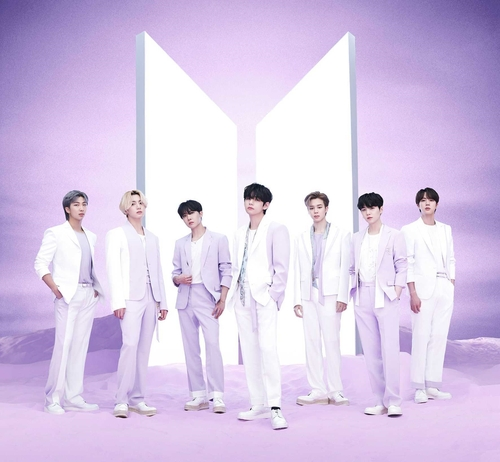

BTS
Creacion 2013

BTS (en hangul, 방탄소년단; romanización revisada del coreano, Bangtan Sonyeondan; literalmente, «Bulletproof Boy Scouts»), también conocido como Bangtan Boys, es un grupo surcoreano formado en 2010. Está compuesto por siete integrantes: Jin, Suga, J-Hope, RM, Jimin, V y Jungkook.
A pesar de haber sido creado con un estilo principalmente hip hop, ha llegado a incorporar una gran variedad de géneros en su repertorio musical. BTS debutó en 2013 bajo la compañía Big Hit Entertainment con el álbum sencillo 2 Cool 4 Skool.
Abrir integrantes
| Integrantes |
Edad y fecha de nacimiento |
Altura y peso
|
| Kim Seok-Jin (김석진) |
4 de diciembre de 1992 (31 años) |
1,79 m y 63 kg |
| Min Yoon-gi 민윤기 o Suga |
9 de marzo de 1993 (31 años) |
1,76 m y 59 kg |
| Jung Ho-Seok (정호석) o J-Hope |
18 de febrero de 1994 (30 años) |
1,77 m y 65 kg |
| Kim Nam-joon o RM |
12 de septiembre de 1994 (29 años) |
1,81 y 67 kg |
| Park Ji-min 박지민 o Jimin |
13 de octubre de 1995 (28 años) |
1,75 m |
| Kim Taehyung 김태형 o V |
30 de diciembre de 1995 (28 años) |
1,79 m y 72,5 kg |
| Jeon Jung-kook 전정국 |
1 de septiembre de 1997 (26 años) |
1,79 m y 70 kg |
Black pink
Creacion 2016

Blackpink (en hangul, 블랙핑크; estilizado como BLΛƆKPIИK o BLACKPINK) es un grupo musical femenino surcoreano formado por YG Entertainment.
Está conformado por cuatro miembros: Jisoo, Jennie, Rosé y Lisa.
El 5 de junio de 2016, YG Entertainment comenzó a revelar imágenes de su nuevo grupo de chicas (anteriormente «PinkPunk») para generar expectativa en el público.
Abrir integrantes
| Integrantes |
Edad y fecha de nacimiento |
Altura y peso
|
| Kim Ji-soo 김지수 o Jisoo |
3 de enero de 1995 (29 años) |
1,62 m y 46 kg |
| Jennie Ruby Jane 김제니 o Jennie |
16 de enero de 1996 (28 años) |
1,62 m y 46 kg |
| Roseanne Park 박채영 o Rosé |
11 de febrero de 1997 (27 años) |
1,68 y 46 kg |
| Pranpriya Manobal ปราณปรียา มโบาล o Lisa |
27 de marzo de 1997 (27 años) |
1,66 y 44 kg |
Baby Monster
Creacion 2023
BabyMonster (en hangul, 베이비몬스터; estilizado en mayúsculas), también conocido como Baemon
(en hangul, 베몬), es un girl group surcoreano formado por YG Entertainment. Está compuesto por
siete miembros, Ruka, Pharita, Asa, Ahyeon, Rami, Rora y Chiquita.
Abrir integrantes
| Integrantes |
Edad y fecha de nacimiento |
Altura y peso
|
| Kawai Ruka 루카 o Ruka |
20 de Marzo de 2002 (22 Años) |
162 m |
| ภริตา บุญภักดีทวียศ Pharita |
26 de Agosto de 2005 (18 Años) |
171 m |
| Enami Asa 아사 o Asa |
17 de Abril de 2006 (18 Años) |
167 m |
| Jung A Hyeon 정아현 A Hyeon |
11 de Abril de 2007 (17 Años) |
168 m |
| Shin Ha Ram 신하람 o Ra Mi |
17 de Octubre de 2007 (16 Años) |
173 m. |
| Lee Da In 이다인 o Ro Ra |
14 de Agosto de 2008 (15 Años) |
170 m. |
| ริรชา พรเดชาพิพัฒน์ Riracha Phondechaphiphat o Chiquita |
17 de Febrero de 2009 (15 Años) |
167 m. |